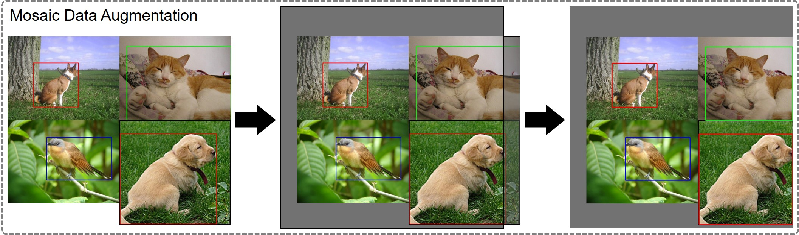

数据增强——mosaic增强¶
介绍¶
将四张图片以随机缩放、随机裁减、随机排布的方式拼接在一起，组成一张图片。
优点：
- 增加了图片数据的多样性，丰富了背景信息；
- 增加了图片中目标的个数；
- 间接提高了batch数量，有利于在BN运算时更好地统计全局的均值方差。

步骤：
- 首先将每张图像依次等比缩放，将宽、高中较大的数值放大到预设的尺寸；
- 生成一张mosaic图像，尺寸为预设尺寸的2倍，并且随机在mosaic图像中心附近生成拼接中心点（四张图片的公共交点）；
- 根据拼接中心点依次做拼接操作，删除越界的图像数据；
- 根据拼接中心依次对每个图片的边界框标签做调整，最后合并成一张图的标签。
注：
- 引入mosaic增强后，输出图像的尺寸已被规定好，统一了图像数据的尺寸大小，同一批次下的数据可以直接执行打包处理，不用再从batch内部执行一次放缩（如：Faster R-CNN源码中的操作）；
- mosaic增强只用于训练阶段，测试阶段不需要增强，只需要将图片放大至顶层特征图感受野的整数倍，防止下采样过程中丢失数据，可以用0填充。
代码实现¶
参考链接：
- https://github.com/WZMIAOMIAO/deep-learning-for-image-processing/tree/master/pytorch_object_detection/yolov3_spp
- https://github.com/ultralytics/yolov3
注：
-
传入当前迭代到的图像索引，传出mosaic增强后的图像数据和边界框标签；
-
代码引自Yolov3，读取到的边界框标签为原图上的相对坐标，格式为’xywh’，并且对原图执行的是等比放大，不改变宽高比例。
def load_mosaic(self, index):
"""
将四张图片拼接在一张图像中
:param self:
:param index: 当前迭代到的图像索引
"""
# loads images in a mosaic
labels4 = [] # 拼接图像的label信息
# self.img_size为预设的图像最大尺寸
s = self.img_size
# 随机初始化拼接图像的中心点坐标
xc, yc = [int(random.uniform(s * 0.5, s * 1.5)) for _ in range(2)] # mosaic center x, y
# 再从dataset中随机寻找三张图像，将索引拼起来得到indices
indices = [index] + [random.randint(0, len(self.labels) - 1) for _ in range(3)] # 3 additional image indices
# 遍历四张图像进行拼接
for i, index in enumerate(indices):
# load image 读取图片数据，并且等比放大到合适的尺寸(注意要执行等比放大)
# 例如:将图片高、宽中最大的一侧放大为self.img_size(预设好的)
img, _, (h, w) = load_image(self, index)
# 依次将四张图片赋值到img4中，做一个拼接
if i == 0: # top left
# 创建马赛克图像
img4 = np.full((s * 2, s * 2, img.shape[2]), 114, dtype=np.uint8) # base image with 4 tiles
# 计算马赛克图像中的坐标信息(将图像填充到马赛克图像中)
x1a, y1a, x2a, y2a = max(xc - w, 0), max(yc - h, 0), xc, yc # xmin, ymin, xmax, ymax (large image)
# 计算截取的图像区域信息(以xc,yc为第一张图像的右下角坐标填充到马赛克图像中，丢弃越界的区域)
x1b, y1b, x2b, y2b = w - (x2a - x1a), h - (y2a - y1a), w, h # xmin, ymin, xmax, ymax (small image)
elif i == 1: # top right
# 计算马赛克图像中的坐标信息(将图像填充到马赛克图像中)
x1a, y1a, x2a, y2a = xc, max(yc - h, 0), min(xc + w, s * 2), yc
# 计算截取的图像区域信息(以xc,yc为第二张图像的左下角坐标填充到马赛克图像中，丢弃越界的区域)
x1b, y1b, x2b, y2b = 0, h - (y2a - y1a), min(w, x2a - x1a), h
elif i == 2: # bottom left
# 计算马赛克图像中的坐标信息(将图像填充到马赛克图像中)
x1a, y1a, x2a, y2a = max(xc - w, 0), yc, xc, min(s * 2, yc + h)
# 计算截取的图像区域信息(以xc,yc为第三张图像的右上角坐标填充到马赛克图像中，丢弃越界的区域)
x1b, y1b, x2b, y2b = w - (x2a - x1a), 0, max(xc, w), min(y2a - y1a, h)
elif i == 3: # bottom right
# 计算马赛克图像中的坐标信息(将图像填充到马赛克图像中)
x1a, y1a, x2a, y2a = xc, yc, min(xc + w, s * 2), min(s * 2, yc + h)
# 计算截取的图像区域信息(以xc,yc为第四张图像的左上角坐标填充到马赛克图像中，丢弃越界的区域)
x1b, y1b, x2b, y2b = 0, 0, min(w, x2a - x1a), min(y2a - y1a, h)
# 将截取的图像区域填充到马赛克图像的相应位置
img4[y1a:y2a, x1a:x2a] = img[y1b:y2b, x1b:x2b] # img4[ymin:ymax, xmin:xmax]
# 计算pad，用于调整边界框坐标
# 图像边界与马赛克边界的距离，如果图像超过了马赛克边界，则视为越界，越界的情况为负值
padw = x1a - x1b
padh = y1a - y1b
# Labels 获取对应拼接图像的labels信息
# [class_index, x_center, y_center, w, h]
x = self.labels[index]
labels = x.copy() # 深拷贝，防止修改原数据
if x.size > 0: # Normalized xywh to pixel xyxy format
# 计算标注数据在马赛克图像中的坐标，乘以w和h是为了将绝对坐标化为相对坐标，之后再加上上述计算的距离，得到最后的坐标数据
labels[:, 1] = w * (x[:, 1] - x[:, 3] / 2) + padw # xmin
labels[:, 2] = h * (x[:, 2] - x[:, 4] / 2) + padh # ymin
labels[:, 3] = w * (x[:, 1] + x[:, 3] / 2) + padw # xmax
labels[:, 4] = h * (x[:, 2] + x[:, 4] / 2) + padh # ymax
labels4.append(labels)
# Concat/clip labels 将四张图像的边界框标签拼接到一块
if len(labels4):
labels4 = np.concatenate(labels4, 0)
# 设置上下限防止越界
np.clip(labels4[:, 1:], 0, 2 * s, out=labels4[:, 1:])
# 返回增强后的图片
return img4, labels4
# 加载图片
def load_image(self, index):
# loads 1 image from dataset, returns img, original hw, resized hw
img = self.imgs[index]
# 如果之前没读取过，则重新读一遍
if img is None: # not cached
path = self.img_files[index]
img = cv2.imread(path) # BGR
assert img is not None, "Image Not Found " + path
h0, w0 = img.shape[:2] # orig hw
# img_size 设置的是预处理后输出的图片尺寸
r = self.img_size / max(h0, w0) # resize image to img_size
# 将图片高、宽中最大的一侧放大为self.img_size，注意要执行等比放大
if r != 1: # if sizes are not equal
interp = cv2.INTER_AREA if r < 1 and not self.augment else cv2.INTER_LINEAR
img = cv2.resize(img, (int(w0 * r), int(h0 * r)), interpolation=interp)
return img, (h0, w0), img.shape[:2] # img, hw_original, hw_resized
else:
return self.imgs[index], self.img_hw0[index], self.img_hw[index] # img, hw_original, hw_resized
初步完稿于：2023年2月14日